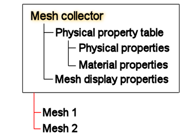
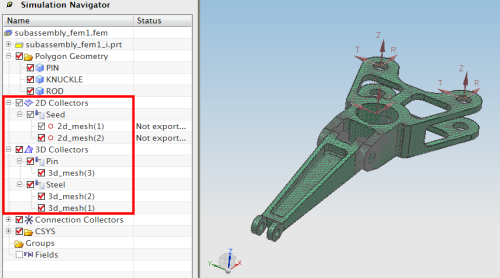

网格收集器：
包含共享相同的属性(如材料、物理属性和显示属性)的网格
允许将相同属性指派给该收集器中的所有网格
可以在仿真导航器中查看所有网格收集器。
每个网格都被指派到一个集合。在创建网格时，首先将网格指派到集合。向其指派新网格的集合称为目标集合。创建一个网格并将它指派给目标后，可将网格重新指派给另外的收集器。

在处理复杂、非均质模型或基于装配的模型时，网格收集器非常有价值。使用网格收集器创建网格的逻辑分组以利于模型管理。您可通过网格集合来控制可视性，以重点关注模型的特定区域。由于共享的属性是与集合一起存储而不是指派到多个网格，因此集合可提高处理大模型的性能。
您可以在收集器中编辑网格属性。对网格集合属性进行的更改由集合中包含的所有网格继承。集合可促进替代管理以及有限元模型的重用，以便用于多个分析。
您可以为集合定义网格显示属性，如单元颜色、收缩百分比等。集合中包含的所有网格将继承集合的显示属性。当把一个网格从一个收集器指派给另外一个时，网格的显示自动更新到新的显示属性。
可以将网格收集器用于：
复杂、非齐次模型，或者基于装配的模型。
创建局部网格组以帮助您管理模型。
显示模型的特定区域，您可以通过网格收集器控制可见性。
改善大模型的表现，因为共享的属性都储存在收集器中，而不是指派到各个网格。
